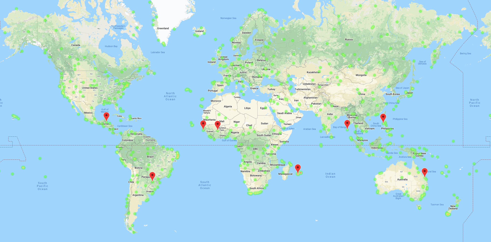

Jack Harvey
I am a recent college graduate excited to explore the programming world. In the past few months I have developed a plethora of scripts that demonstrate my capabilities with programming languanges including Python, SQL, and JavaScript. My goals are to work within an analytical team in where I can utilize my knowledge of programming and technical skills to automate tasks, develope webpages, transfer and load data to analyze, and develop visualizations to be exploited by a firm. My contact information is to the right and below I will post the many projects that I have completed throughout the time I have been enrolled in the Rugter Data Science Program.
Projects
Web Scraping
In Python and HTML I used Splinter to scrape data and images from various websites in regards to the current state of mars. My goal was to extract data from NASA's news website in order to extract the most up to date articles that they have posted in regards to Mars. My overall goal was to be able to reload my wepage with the most up to date information as well as links to where the user and read more information. I then used Flask to connect the Python files with the HTML file in order to make edits and update files easily. In this project I also took advantage of the Tweepy Library which extracts information from Twitter quickly and efficiently as user's post updates.
Python API's to Locate Hotel's Around The World

In Python I was able to develope a program that randomly compiles a list of hundreds of latitudes and longitutes for the Citipy library to identify the nearest city (New coordinates are identified each time the program is run). I then employed API's and the request library to search for the current weather data from each city to generate a new DataFrame. Visualizations are displayed based on the DataFrame and seperated into Northern and Southern Hemisphere's for visualizations and linear regression models. The Weather DataFrame is then imported into a seperate file to develope a Heat Map based on Humidity Levels in each city. Here the user can identify what their weather preferences are and the program uses Google Api's to pinpoint the closest Hotel in the city and marks this location on the Heat Map.
The Impact of the Gloabal Financial Crisis on the Housing Market
- Worked within a team to merge and analyze Employment Data in Python from the USDA with House Price Data from the FHFA in the United States during the Global Financial Crisis.
- Defines functions and utilizes dictionaries to ensure data is easily accessible for analysis.
- Bins data by size of the Civilian Labor Force and Median House Price in 2007 to explore trends in house prices and unemployment rate through the use of Matplotlib.
- Generates scatter plots that display the relationship between the Median House Price and the Unemployment Rate in any given state.
- The smallest plot on the scatter plot represents the year 2007 and increases for each year in the scatter plot.
SQLAlchemy to Analyze the Weather in Hawaii
In this project I utilized Python and the SQLAlchemy library to import and analyze a large dataset of historical weather data from several stations throuhgout Hawaii. I applied session queries to identify the average precipitation levels and the average temperatures in Hawaii for the past year to determine the weather trends in the upcoming year. The application develops a histogram, a line graph, a bar graph with an error bar, and an area plot from data queried through the use of functions that identifies the minimum, maximum, and average temperatures from past data. I then created an application in Flask and Jsonified the data I queried onto a page where user's can view weather statistics from the past year. The application also allows the user to select a specific start/end date and returns the minimum, average, and maximum temperatures observed from all the stations located in Hawaii.